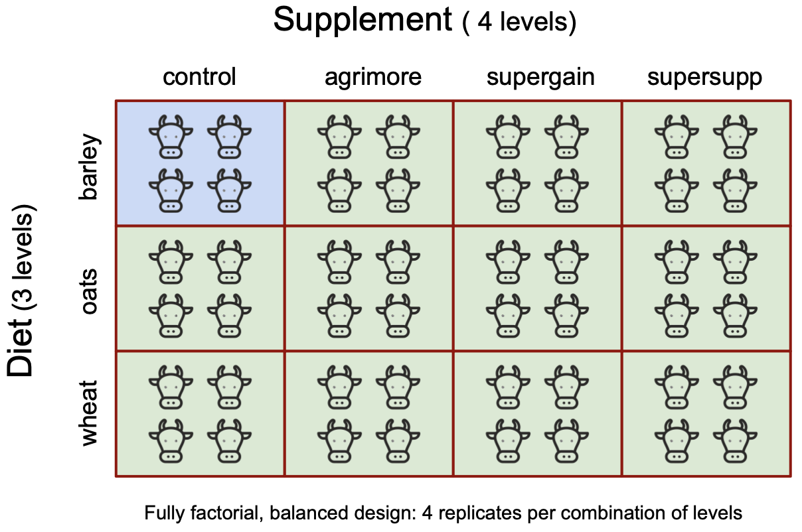

7 Two-way ANOVA with model simplification
This exercise sheet is heavily indebted to Michael Crawley’s Statistics: An introduction using R, 2nd Ed, Wiley. Published in 2015 this emphasises statistics over R (in fact, much of the R he presents is written prior to the advent of the tidyverse dialect which we use here, and so may seem terse if that is what you are used to). It is very useful and is at a higher level than Beckerman, Childs and Petchey’s Getting Started in R: An introduction for biologists, 2nd Ed. OUP published in 2017. Their book also includes a simpler version of the example explored here.
7.1 Factorial experiments and model simplification
The best model is the one that adequately explains the data with fewest parameters. This means with the smallest possible number of degrees of freedom.
If we have a very large number of parameters, a model can fit any data set but be of limited use in generalising beyond it (we will have overfitted the data). If we have too few we will not explain much of the variance of the data. A balance must be struck. Hence we want the minimal adequate model.
As Einstein almost said, a model should be as simple as possible, but no simpler. (Not to be outdone, the British statistician George Box also had a pithy saying about models: “All models are wrong, but some are useful”.)
A factorial experiment has two or more factors, each with two or more levels, plus replication for each combination of factor levels. This means that we can investigate whether statistical interactions occur in which the effect of one factor depends on the value of another factor.
We take an example from a farm-trial of animal diets. There are two factors: diet and supplement. diet is a factor with three levels: barley, oats and wheat, where barley is the diet that has always been used and the other two are potential alternatives. The purpose of the trial is to see if their use makes a difference to growth outcomes. supplement is a factor with four levels: control, agrimore, supergain and supersupp, where control could mean the absence of any supplement or the supplement used up to now, whose effects we are hoping to improve upon through use of one of the others included in the trial. The response variable gain is weight gain after 6 weeks. There were 48 individual cows in total with 4 for each combination of diet and supplement. Having the same number of replicates for each combination of levels means that this is a balanced design.
7.2 Files needed
To follow through this exercise, you should have an RStudio project folder that contains:
In the Project/scripts folder:
ANOVA_two_way_template.Rmd(the script where you fill in the code chunks)
In the Project/data folder
growth.csv
You can download a complete project folder with these files in from here
In the following, we present the code you need to analyse this data together with explanatory text. Read the text closely so that you understand what each chunk of code is intended to do. In the accompanying template file, fill in the code as you go in the empty chunks, using this worksheet as a guide. As you complete each line of code, run it using Ctrl-Enter, or Cmd-Enter on a Mac. Alternatively, wait until you have completed the code for a chunk then run the whole chunk in one go by pressing the little green arrow at the top right of the chunk. Whichever way you choose, you are encouraged to view the code presented here as one way to do the analysis. Feel free to hack away at it and change things, to try different approaches and see what happens. That way you will learn. You may also wish to add your own text between the chunks.
7.3 Open your Project
You should be working within a folder that you have designated as what RStudio calls a ‘Project’. If you are, the name of your Project will appear at the top right of the RStudio window. Inside your Project folder you should have a scripts folder for scripts like the one you are working from, and a data folder for all the data files. You will also see, at the top level of the Project, the .RProj file. You can see all this in the Files pane, bottom-right.
7.4 Load packages
I normally load all the packages in the chunk below into every script. The most important is the tidyverse package which is a goody bag containing several other packages. Loading this saves you from having to load each of those individually. The most often used among these is readr for reading and writing data from/to files, dplyr for data manipulation, and ggplot2 for plotting. Others will be used from time to time, and we don’t really need to be aware of that when it happens or to worry about it, so long as tidyverse has been loaded.
library(tidyverse) # for data manipulation and plotting, and much else besides
library(here) # for finding our data easily
library(cowplot) # gives a nice theme for plots
library(ggfortify) # for diagnostic plots7.5 Read in the data
The growth.csv data file needs to be in the data folder within the Project folder.
In this chunk we read the growth.csv data into an R object to which we give the name weights.
filepath <- here("data", "growth.csv")
weights <- read_csv(filepath) # this function is from the readr package, part of tidyverse
glimpse(weights)Rows: 48
Columns: 3
$ supplement <chr> "supergain", "supergain", "supergain", "supergain", "contro…
$ diet <chr> "wheat", "wheat", "wheat", "wheat", "wheat", "wheat", "whea…
$ gain <dbl> 17.37125, 16.81489, 18.08184, 15.78175, 17.70656, 18.22717,…You see from the output of the glimpse() function that weights has three columns and 48 rows. Two columns are of data type <chr> which is R-speak for text, and the other is data type <dbl> which is R-speak for numerical data with a decimal point.
7.6 Clean the data
Having read in the data some cleaning/wrangling/tidying or processing of the data is often required before we can go further with the analysis.
Warning! This step can be the most time-consuming of the whole analysis, particularly if you are using a large data set obtained from a third party.
Here there is not much to do, but we would like to make R recognise the categorical variables as factors, and order the levels.
7.6.1 Force R to recognise supplement and diet as factors, and to reorder their levels.
At the moment, the contents within the variables supplement and diet are not being recognised as levels of factors. R is just thinking of them as text (or <chr> in R-speak), as we can see from the output of the glimpse() function in the chunk above. Let us fix that, as it will be useful for them to be recognized for what they are so that we can order the levels in a way that makes sense for our context, our plots and our analysis.
Sometimes levels of a factor have a natural order, such as Low, Mid and High as the levels of the factor Tidal Zone and sometimes they do not, for example Apples, Oranges and Pears as levels of the factor Fruit. Here, in the case of both our factors, we only wish to impose order among the levels in so far as we would like what we regard as the control or reference level to be first. By default, R puts the levels of a factor in alphabetical order. This is the order in which the boxes of a box plot would be displayed, reading left to right. In an ANOVA setting it means that differences of outcome (in this case, weight gain of the cows) are later calculated for each combination of levels with respect to the outcome for the combination of levels that are alphabetically first, in this case barley for diet and agrimore for supplement. In both the box-plot and the ANOVA output case this default ordering is not necessarily what we want. Normally, we want what we regard as the control levels to be the reference level and in this case that means barley for diet and control for supplement.
To ensure that a variable is regarded as a factor, and then to get its levels in the order we would like, we use the factor() function.
In the following chunk, factor() is used to designate both the supplement and diet columns of the data set as factors, and the level order of each is specified, with control coming first for supplement and barley coming first for diet.
# This line of code designates the supplement and diet columns of weights as factors, orders the levels of these factors as required and saves the result under the original name.
weights <- weights |>
mutate(supplement = factor(supplement, levels = c("control","agrimore", "supergain", "supersupp"))) |>
mutate(diet = factor(diet, levels = c("barley", "oats", "wheat")))
# check that this worked
glimpse(weights)Rows: 48
Columns: 3
$ supplement <fct> supergain, supergain, supergain, supergain, control, contro…
$ diet <fct> wheat, wheat, wheat, wheat, wheat, wheat, wheat, wheat, whe…
$ gain <dbl> 17.37125, 16.81489, 18.08184, 15.78175, 17.70656, 18.22717,…# check the level order of each factor - does the 'reference' level come first?
levels(weights$supplement)[1] "control" "agrimore" "supergain" "supersupp"levels(weights$diet)[1] "barley" "oats" "wheat" Do you see how the variable types of the supplement and diet columns have been changed to <fct>? It worked!
To get control to be the reference level of supplement we needed to force the issue in this way. If we hadn’t then agrimore would have been regarded as such, since it is alphabetically the first among the levels of supplement. We didn’t need to do this for diet, since the stipulated ordering of the levels is just the alphabetical order and so we would have had that by default anyway. Sometimes, though, it doesn’t hurt to throw in a little redundancy for the sake of clarity.
So, now we have control as the reference level for supplement and barley as the reference level for diet. Now we can see more easily in our analysis what difference is made to weight gain when we change diet or supplement or both from a ‘business as usual’ combination of a barleydiet and the control supplement.
7.7 Summarise the data
Our question is a difference question: is there evidence from the data that using this or that diet in combination with this or that supplement makes a difference to growth? For an answer to this we will end up doing a 2-way ANOVA including the possibility of an interaction, then, as we will see, a simpler ANOVA that ignores the possibility of the interaction. All well and good, but before we go to those lengths, we do something more basic: we calculate the mean and standard error of the mean for each of the twelve combinations of diet and supplement.
There isn’t a function in base R with which we can calculate standard error of the mean directly, but we can do so knowing the standard deviation of the sample \(\text{SD}\) (using sd()) and the sample size \(n\) (using n()) using this formula:
\[ \text{SE}=\frac{SD}{\sqrt{n}}\]
# we use the group_by() and summarise() functions from dplyr (the package within tidyverse for data manipulation)
growth_summary <- weights |>
group_by(diet, supplement) |>
summarise(mean_gain = mean(gain), se_gain = sd(gain)/sqrt(n())) |>
ungroup()
# if we type the name of an object, it gets printed out for us
growth_summary |> kable()| diet | supplement | mean_gain | se_gain |
|---|---|---|---|
| barley | control | 23.29665 | 0.7032491 |
| barley | agrimore | 26.34848 | 0.9187479 |
| barley | supergain | 22.46612 | 0.7710644 |
| barley | supersupp | 25.57530 | 1.0599015 |
| oats | control | 20.49366 | 0.5056319 |
| oats | agrimore | 23.29838 | 0.6131592 |
| oats | supergain | 19.66300 | 0.3489388 |
| oats | supersupp | 21.86023 | 0.4132292 |
| wheat | control | 17.40552 | 0.4604420 |
| wheat | agrimore | 19.63907 | 0.7099260 |
| wheat | supergain | 17.01243 | 0.4852821 |
| wheat | supersupp | 19.66834 | 0.4746443 |
Note the ordering of the diet and supplement levels in their respective columns: just what we have imposed!
7.8 Plot the data
The next step, as so often before we launch into actual statistics, is to plot the data in a way that sheds light on the question we have. Here, we can use the use the means and standard errors of the mean that we have just calculated to produce a useful kind of line plot that in this context is often referred to as an interaction plot:
growth_summary |>
ggplot(aes(x = supplement,y = mean_gain, colour = diet, group = diet)) +
geom_point(size = 2) +
geom_line() +
geom_errorbar(aes(ymin = mean_gain - se_gain, ymax = mean_gain + se_gain), width = 0.1) +
labs(x = "Supplement",
y = "Mean weight gain") +
scale_fill_brewer() +
theme_cowplot()
Note that on this plot the error bars are standard errors of the mean. Any caption to a figure that contains error bars should explain what those error bars mean. In particular, it should say whether they are standard deviations of the sample, standard errors of the mean or confidence intervals. These are all different from each other. A good explanation of the difference is given by (Cumming, Fidler, and Vaux 2007)
This interaction plot is useful in that we see that both diet and supplement have an effect on growth and that the effect of one is altered little by the value of the other, the result of which is that the lines are more or less parallel. This suggests that we have main effects of both diet and supplement, but little or no interaction between them.
7.8.1 Questions
What could the line plot look like if:
There were no main effect of both diet and supplement, and no interaction
There were a main effect of diet, no main effect of supplement and no interaction?
There were no main effect of diet, a main effect of supplement and no interaction?
There were main effects of both and an interaction between them?
The plots tell you a great deal about what main effects and/or interactions there may be.
7.9 ANOVA
Now for the actual statistical test. We will conduct a two-way ANOVA, which will look to see if there is evidence that either diet or supplement or both affect growth rate (the so-called main effects), and if the effect of one depends on the nature of the other (the so-called interaction).
The null hypothesis is that neither has any main effect and that there is no interaction.
Now we can use either of the functions aov() or lm() to carry out a factorial ANOVA (the choice affects only whether we get an ANOVA table or a list of parameter estimates as the default output from summary().). Here, we will use lm(), partly because we would also use it for one-way ANOVAs and linear regression, and to do so here reminds of the common mathematical machinery that underlies all these methods.
We estimate parameters for the main effects of each level of diet and each level of supplement, plus terms for the interaction between diet and supplement.
The interaction degrees of freedom are the product of those for diet and supplement ie (3-1) x (4-1) = 6.
The model is:
gain ~ diet + supplement + diet:supplement
which can be written more simply using the asterisk notation as:
gain ~ diet * supplement
7.9.1 Construct the model
First we construct the model using lm() and store the outputs of all the maths that `lm() does in an object called model0:
model0 <- lm(gain ~ diet * supplement, data = weights)7.9.2 Do we reject the null hypothesis?
To get an overall picture, we first use anova() to see if there is evidence to reject the null
anova(model0)Analysis of Variance Table
Response: gain
Df Sum Sq Mean Sq F value Pr(>F)
diet 2 287.171 143.586 83.5201 2.999e-14 ***
supplement 3 91.881 30.627 17.8150 2.952e-07 ***
diet:supplement 6 3.406 0.568 0.3302 0.9166
Residuals 36 61.890 1.719
---
Signif. codes: 0 '***' 0.001 '**' 0.01 '*' 0.05 '.' 0.1 ' ' 1The ANOVA table shows that there a main effect of both diet and supplement (p<0.001 in both cases), but that there is no hint of an interaction between diet and supplement (p = 0.917). Does that tally with what you see in the interaction plot? Clearly therefore, the effects of diet and supplement are merely additive (ie whichever level of one you have it does not affect the impact on growth of whichever level of the other you choose).
The ANOVA table does not show us effect sizes or allow us to work out which if any of the levels of the two factors are significantly different. For this, summary() is more useful:
summary(model0)
Call:
lm(formula = gain ~ diet * supplement, data = weights)
Residuals:
Min 1Q Median 3Q Max
-2.48756 -1.00368 -0.07452 1.03496 2.68069
Coefficients:
Estimate Std. Error t value Pr(>|t|)
(Intercept) 23.2966499 0.6555863 35.536 < 2e-16 ***
dietoats -2.8029851 0.9271390 -3.023 0.00459 **
dietwheat -5.8911317 0.9271390 -6.354 2.34e-07 ***
supplementagrimore 3.0518277 0.9271390 3.292 0.00224 **
supplementsupergain -0.8305263 0.9271390 -0.896 0.37631
supplementsupersupp 2.2786527 0.9271390 2.458 0.01893 *
dietoats:supplementagrimore -0.2471088 1.3111726 -0.188 0.85157
dietwheat:supplementagrimore -0.8182729 1.3111726 -0.624 0.53651
dietoats:supplementsupergain -0.0001351 1.3111726 0.000 0.99992
dietwheat:supplementsupergain 0.4374395 1.3111726 0.334 0.74060
dietoats:supplementsupersupp -0.9120830 1.3111726 -0.696 0.49113
dietwheat:supplementsupersupp -0.0158299 1.3111726 -0.012 0.99043
---
Signif. codes: 0 '***' 0.001 '**' 0.01 '*' 0.05 '.' 0.1 ' ' 1
Residual standard error: 1.311 on 36 degrees of freedom
Multiple R-squared: 0.8607, Adjusted R-squared: 0.8182
F-statistic: 20.22 on 11 and 36 DF, p-value: 3.295e-12This is a complex model as there are 12 estimated parameters: 6 main effects and 6 interactions. Notice that although the ‘controls’ for diet and supplement (barley and control) do not appear to be in the table, they are there really, in the first row.
The value 23.30 kg in the first row of the Estimate column on the left, labelled ‘Intercept()’ gives us the actual weight gain outcome for the combination of the two control levels, barley as diet and control as supplement. Check that this value tallies with what is shown in summary tables above, and in the interaction plot.
The weight gain values for all the other combinations of the levels of each factor are given as differences from this reference level.
So for example in row two, where diet is changed from barley to oats but supplement is still control, the value in the table is -2.8. This means that the weight gain when the diet is changed to oats but the supplement left as the control is 2.80 kg less than the reference value, and so must be 23.30-2.80 = 20.50 kg. This agrees with the value in the summary table of mean values that was calculated above, and tallies with the interaction plot.
In row seven we see that the effect of the interaction between the diet oats and the supplement agrimore is - 0.247. This means that on going from the reference levels of barley and control, for which the gain is 23.30, the change in gain is not just the sum of the two main effects (-2.80 for switch of diet to oats and +3.05 for switch of supplement to agrimore, but is modified by their interaction, of size - 0.247. Hence the mean gain for a diet of oats and a supplement of agrimore is the intercept value plus the sum of the two main effects, plus the interaction term: 23.297 - 2.803 + 3.052 - 0.247 = 23.299)
See if you can tally the other effect values in the summary table with the mean values given in table above and in the interaction plot for other combinations of diet and supplement.
Here is a table to help you interpret the output of the summary() function.
| term | meaning | type_of_effect | estimate | absolute_value | p_value | significance |
|---|---|---|---|---|---|---|
| (Intercept) | barley + control | Main effect | 23.30 | 23.30 | <0.001 | *** |
| dietoats | oats + control | Main effect | -2.80 | 20.49 | 0.005 | ** |
| dietwheat | wheat + control | Main effect | -5.89 | 17.41 | <0.001 | *** |
| supplementagrimore | barley + agrimore | Main effect | 3.05 | 26.35 | 0.002 | ** |
| supplementsupergain | barley + supergain | Main effect | -0.83 | 22.47 | 0.376 | |
| supplementsupersupp | barley + supersupp | Main effect | 2.28 | 25.58 | 0.019 | *. |
| dietoats:supplementagrimore | oats + agrimore | Interaction | -0.25 | 23.05 | 0.852 | |
| dietwheat:supplementagrimore | wheat + agrimore | Interaction | -0.82 | 22.48 | 0.537 | |
| dietoats:supplementsupergain | oats + supergain | Interaction | 0.00 | 23.30 | 1.0 | |
| dietwheat:supplementsupergain | wheat + supergain | Interaction | 0.44 | 23.73 | 0.741 | |
| dietoats:supplementsupersupp | oats + supersupp | Interaction | -0.91 | 22.38 | 0.491 | |
| dietwheat:supplementsupersupp | wheat + supersupp | Interaction | -0.02 | 23.28 | 0.99 |
The output of the summary() function re-emphasises that none of the interaction terms are significant. It also suggests that a minimum adequate model will contain 5 parameters: an intercept, which just means that there is non-zero growth when the diet and supplement are the reference values, a difference from that growth due to changing the diet to oats, a difference due to changing it towheat, a difference due to changing the supplement to agrimore while keeping barley as the diet, and a difference due to changing the supplement instead to suppersupp..
7.10 Model Simplification
Given the results of the full interaction model, we begin model simplification by leaving out the interaction terms, to leave us with an additive model:
model_1 <- lm(gain ~ diet + supplement, data = weights)
summary(model_1)
Call:
lm(formula = gain ~ diet + supplement, data = weights)
Residuals:
Min 1Q Median 3Q Max
-2.30792 -0.85929 -0.07713 0.92052 2.90615
Coefficients:
Estimate Std. Error t value Pr(>|t|)
(Intercept) 23.4263 0.4408 53.141 < 2e-16 ***
dietoats -3.0928 0.4408 -7.016 1.38e-08 ***
dietwheat -5.9903 0.4408 -13.589 < 2e-16 ***
supplementagrimore 2.6967 0.5090 5.298 4.03e-06 ***
supplementsupergain -0.6848 0.5090 -1.345 0.185772
supplementsupersupp 1.9693 0.5090 3.869 0.000375 ***
---
Signif. codes: 0 '***' 0.001 '**' 0.01 '*' 0.05 '.' 0.1 ' ' 1
Residual standard error: 1.247 on 42 degrees of freedom
Multiple R-squared: 0.8531, Adjusted R-squared: 0.8356
F-statistic: 48.76 on 5 and 42 DF, p-value: < 2.2e-167.11 Check the validity of the additive model
We ought to pause here for a moment and just check that we are OK to go ahead and analyse our data using a general linear model (of which ANOVA is an example, linear regression and t-tests being others). We will use autoplot() from the ggfortify package, which gives us the standard four diagnostic plots.
autoplot(model_1) + theme_cowplot() # autoplot() is from the ggfortify package.
Well, that all looks fine. In particular, from the top-left figure we see that the variance of the residuals is more or less constant and from the top-right figure, the quantile-quantile plot, we get a pretty good approximation of a straight line which tells us that the residuals are more or less normally distributed. These are two key assumptions that must be at least approximately satisfied by data if it is going to make any sense to use a linear model to analyse it. We won’t discuss here the other two diagnostic plots, but they look fine too. So we are good to go using ANOVA with this data.
Back to interpreting the output of the ANOVA:
It is clear that we need to retain all three levels of diet since the effect values of each differ from each other by an amount that is several times the standand errors, so that t >> 1. It is not clear that we need all the levels of supplement, however. supersupp is not obviously different from agrimore (difference = -0.727 with standard error = 0.509), yet both are clearly different from control. However supergrain is not obviously different from control (difference = -0.68, error = 0.509). Hence we are tempted to try a new model with just two levels of the factor supplement which we might sensibly call “best”, by which we mean agrimore or supersupp, and “worst” by which we mean control or supergrain. We’ll name this new factor supp2.
This code chunk amends the weights data frame by adding a new column to it called supp2 in which the values are either best if the supplement is agrimore or supersupp, or worst if the supplement is either of the other two
weights <- weights |>
mutate(supp2 = ifelse(supplement %in% c("agrimore", "supersupp"), "best", "worst"))
glimpse(weights)Rows: 48
Columns: 4
$ supplement <fct> supergain, supergain, supergain, supergain, control, contro…
$ diet <fct> wheat, wheat, wheat, wheat, wheat, wheat, wheat, wheat, whe…
$ gain <dbl> 17.37125, 16.81489, 18.08184, 15.78175, 17.70656, 18.22717,…
$ supp2 <chr> "worst", "worst", "worst", "worst", "worst", "worst", "wors…If we calculate the means and standard errors for weight gain under each diet for each of the two new classifications of supplement, and then plot them, we get this new interaction plot:
weights |>
group_by(diet, supp2) |>
summarise(mean_gain = mean(gain), se_gain = sd(gain)/sqrt(n())) |>
ungroup() |>
ggplot(aes(x = supp2,y = mean_gain,colour = diet, group=diet)) +
geom_point(size=2) +
geom_line() +
geom_errorbar(aes(ymin = mean_gain-se_gain, ymax = mean_gain + se_gain), width=0.1) +
labs(x = "Supplement",
y = "Mean weight gain") +
scale_fill_brewer() +
theme_cowplot()
From this we can see that diet clearly makes a difference to weight gain, since the three lines are separated by a distance much larger than the standard errors, and also that the best supplement clearly makes a difference since there is a consistent drop on going from ‘best’ to ‘worst’, again by an amount that is much larger than the error bars, and there is clearly no interaction between diet and supplement, since the lines are parallel within the wiggle-room allowed by the error bars, which means that the effect of diet does not depend on supplement, and the effect of supplement does not depend on diet.
Now we will make the simpler model, calling it model_2 (for comparison with the first additive model, model_1)
# additive model whee the supplements have been condensed from four to two: best and worst
model_2 <- lm(gain ~ diet + supp2, data = weights)and then compare the two additive models:
anova(model_1, model_2)Analysis of Variance Table
Model 1: gain ~ diet + supplement
Model 2: gain ~ diet + supp2
Res.Df RSS Df Sum of Sq F Pr(>F)
1 42 65.296
2 44 71.284 -2 -5.9876 1.9257 0.1584When we use anova() in this way it is testing the explanatory power of the second model against that of the first ie how much of the variance in the data does each explain. Its null hypothesis is that both models explain just as much of the variance as the other.
The simpler model has saved two degrees of freedom and is not significantly different in explanatory power than the more complex model (p = 0.158). Hence this is a better candidate as a minimal adequate model. All the parameters are significantly different from zero and from each other.
summary(model_2)
Call:
lm(formula = gain ~ diet + supp2, data = weights)
Residuals:
Min 1Q Median 3Q Max
-2.6716 -0.9432 -0.1918 0.9293 3.2698
Coefficients:
Estimate Std. Error t value Pr(>|t|)
(Intercept) 25.7593 0.3674 70.106 < 2e-16 ***
dietoats -3.0928 0.4500 -6.873 1.76e-08 ***
dietwheat -5.9903 0.4500 -13.311 < 2e-16 ***
supp2worst -2.6754 0.3674 -7.281 4.43e-09 ***
---
Signif. codes: 0 '***' 0.001 '**' 0.01 '*' 0.05 '.' 0.1 ' ' 1
Residual standard error: 1.273 on 44 degrees of freedom
Multiple R-squared: 0.8396, Adjusted R-squared: 0.8286
F-statistic: 76.76 on 3 and 44 DF, p-value: < 2.2e-16In this table,
- line one
(Intercept)tells us that the mean weight gain when on the barley diet and best supplement is 25.76 kg - line two
dietoatstells us that there is a significant drop in weight gain of 3.1 kg when diet is changed to oats. - line three
dietwheattells us that there is a significant drop in weight gain of 5.99 kg when diet is changed to wheat. - line four
supp2worsttells us that there is a significant drop in wight gain of 2.68 kg when supplement is changed to worst.
In all cases, p< 0.001, as indicated not only by the number in the Pr(>|t|) column, but also by the ‘***’ in the right-most column of the table.
7.12 Reporting the results
We have now reduced our initial 12 parameter model to a four parameter model that is much more tractable and easier to communicate. Our advice would be that for maximum weight gain a diet of barley with a supplement of agrimore or supersupp would be best.
If we were reporting this as a statistical test, we might say something like: A diet of barley with a supplement of agrimore or supersupp was to offer significant improvements over alternatives. There was no evidence of any interaction between diet and supplement. (ANOVA 2-way, F3,44 = 76.76, p < 0.001)
Cumming, Geoff, Fiona Fidler, and David L. Vaux. 2007. “Error Bars in Experimental Biology.” Journal of Cell Biology 177 (1): 7–11. https://doi.org/10.1083/jcb.200611141.